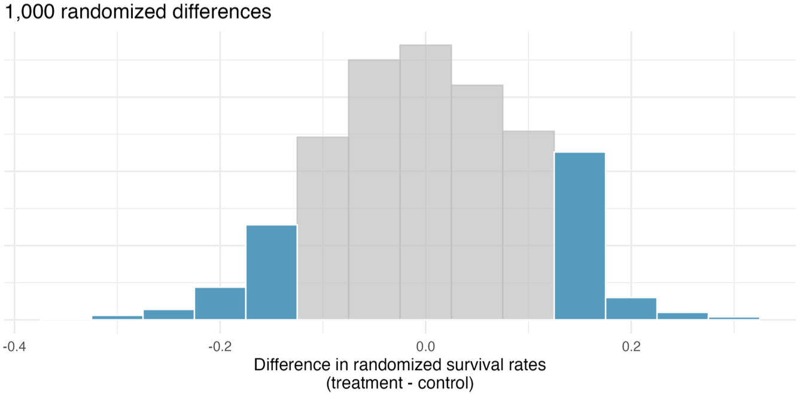

Decision Errors
STA35B: Statistical Data Science 2
Hypothesis testing turns data into a decision
- \(p\)-value small enough \(\rightarrow\) reject \(H_0\)
- But even a careful test can lead to the wrong conclusion.
It is possible to commit no mistakes and still lose. That is not a weakness; that is life.
— Jean Luc Picard
It is possible to use the data perfectly and still mispredict. That is not a weakness; that is life’s randomness and uncertainty.
— Me
- What kinds of mistakes can happen, and how often?
Four Possible Outcomes
| \(H_0\) true |
Type I error |
Good decision |
| \(H_A\) true |
Good decision |
Type II error |
- Type I error: reject \(H_0\) when \(H_0\) is true.
- Type II error: fail to reject \(H_0\) when \(H_A\) is true.
Example: A spam filter tests whether a message is spam. Let:
\[
H_0: \text{message is legitimate}
\]
\[
H_A: \text{message is spam}
\]
What are Type I and Type II errors?
Discernibility Level
The discernibility level is the cutoff for deciding whether a \(p\)-value is small enough to reject \(H_0\).
- Chosen before the test, not discovered from the data.
- For a chosen discernibility level \(\alpha\) (often chosen to be 0.05):
- If \(p \le \alpha\), reject \(H_0\).
- If \(p > \alpha\), fail to reject \(H_0\).
What Does \(\alpha\) Control?
If \(H_0\) is true and we use \(\alpha = 0.05\):
- we will reject \(H_0\) about 5% of the time in repeated testing.
- Those rejections are Type I errors.
- So \(\alpha\) controls the long-run Type I error rate.
Choosing \(\alpha\)
Choose \(\alpha\) based on consequences.
| Type I error |
smaller \(\alpha\), e.g. 0.01 |
| Type II error |
larger \(\alpha\), e.g. 0.10 |
- Lowering one kind of error usually increases the other.
One-Sided vs. Two-Sided
A one-sided alternative asks whether the effect goes in one specified direction:
\[
H_A: p_T - p_C > 0
\]
A two-sided alternative asks whether there is any difference:
\[
H_A: p_T - p_C \ne 0
\]
Use a two-sided test when:
- either direction would matter,
- the research question is about “any difference,”
- the direction was suggested by the observed data,
- ignoring one direction would reflect confirmation bias.
CPR Study
Study question:
Do blood thinners affect 24-hour survival after CPR for a heart attack?
| Control |
39 |
11 |
50 |
| Treatment |
26 |
14 |
40 |
| Total |
65 |
25 |
90 |
- Control survival rate: \(\hat{p}_C = \frac{11}{50} = 0.22\)
- Treatment survival rate: \(\hat{p}_T = \frac{14}{40} = 0.35\)
- Observed difference: \(\hat{p}_T - \hat{p}_C = 0.13\)
CPR: Hypotheses
Let:
- \(p_C\) = true survival rate without blood thinner
- \(p_T\) = true survival rate with blood thinner
Two-sided hypotheses:
\[
H_0: p_T - p_C = 0
\]
\[
H_A: p_T - p_C \ne 0
\]
CPR: Two-Sided p-Value
The observed statistic is \(+0.13\).
For a two-sided test, results at least as extreme include both tails:
\[
\hat{p}_T - \hat{p}_C \le -0.13
\qquad\text{and}\qquad
\hat{p}_T - \hat{p}_C \ge 0.13
\]

The two-sided p-value is the shaded area, which is roughly p = 0.262.
CPR: Decision
Using \(\alpha = 0.05\):
\[
0.262 > 0.05
\]
- Decision: fail to reject \(H_0\).
- Interpretation: the study does not provide convincing evidence that blood thinners changed 24-hour survival.
Do Not Choose the Tail Afterward
Bad workflow:
- look at data \(\rightarrow\) notice direction \(\rightarrow\) choose one-sided test in that direction
- With \(\alpha = 0.05\), this can make the Type I error rate about 10% instead of 5%.
- Set hypotheses before observing the data.
Power
Power is the probability that a test rejects \(H_0\) when \(H_A\) is true.
\[
\text{Power} = P(\text{reject } H_0 \mid H_A \text{ true})
\]
- High power means a real effect is likely to be detected.
- Power = 1 - probability of Type II error.
Power tends to increase when:
- the sample size is larger,
- the true effect is larger,
- variability is smaller,
- the discernibility level \(\alpha\) is larger,
- the study design is more efficient.
Common Misinterpretations
Avoid saying:
- “Fail to reject \(H_0\) means \(H_0\) is true.”
- “\(\alpha = 0.05\) means there is a 5% chance this conclusion is wrong.”
- “A large p-value proves no effect.”
- “It is okay to choose one-sided after seeing the data.”